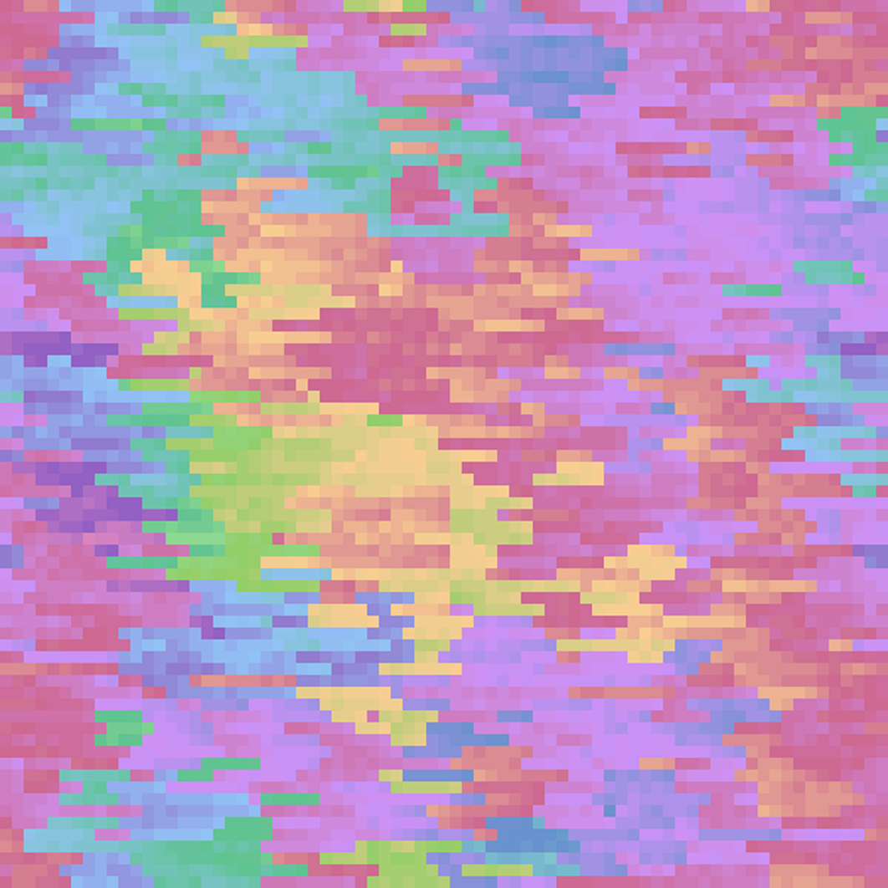
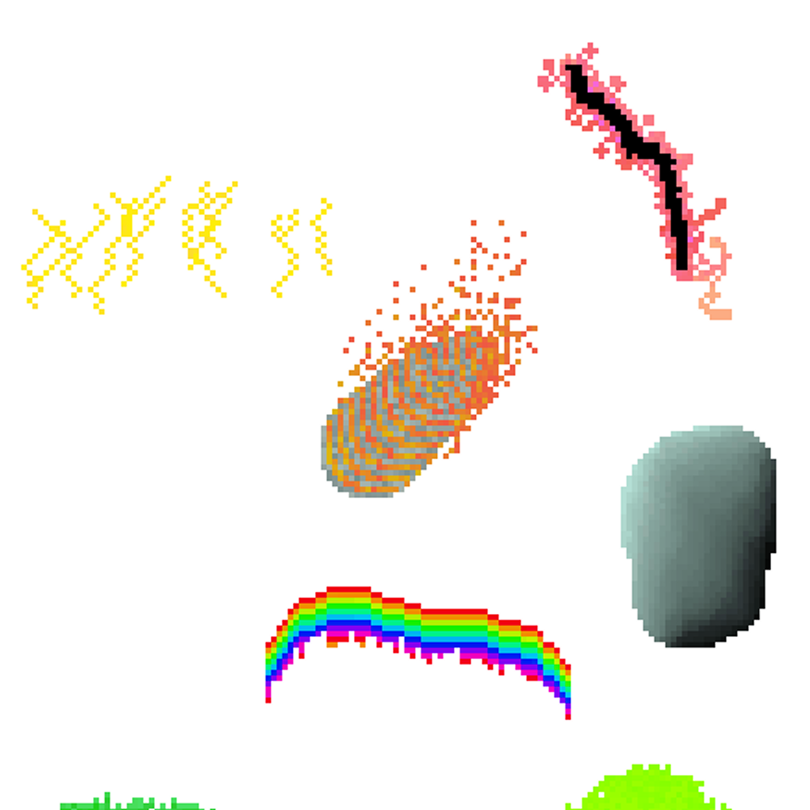
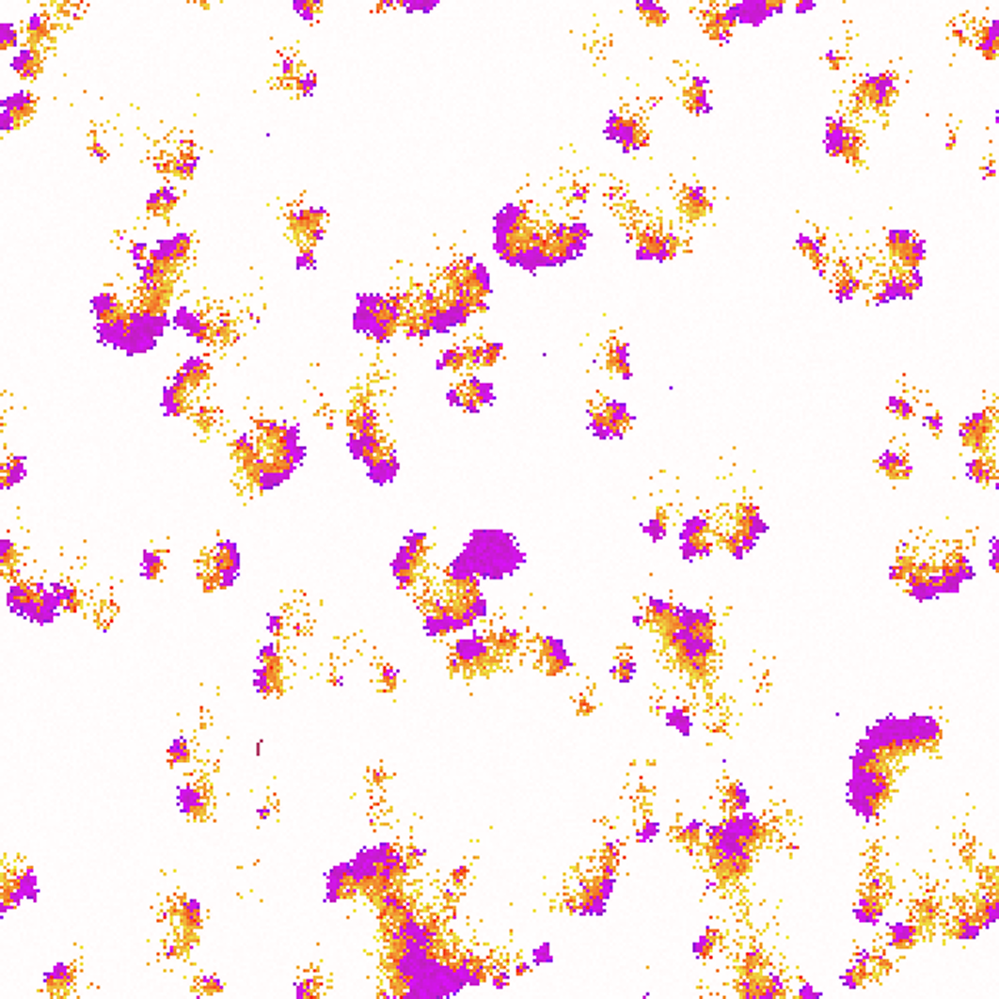
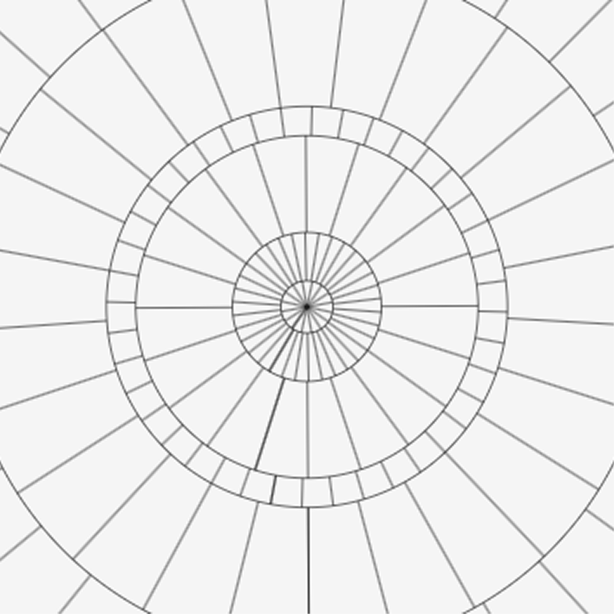
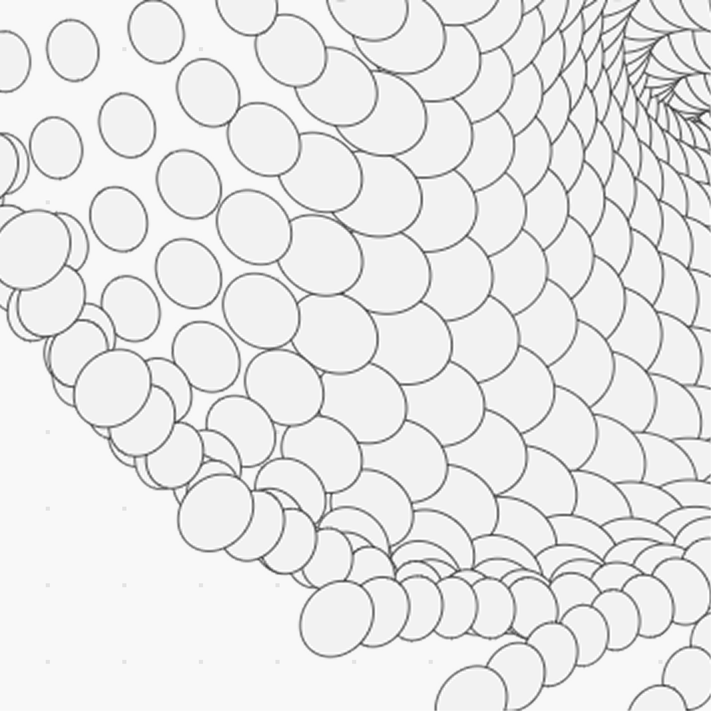
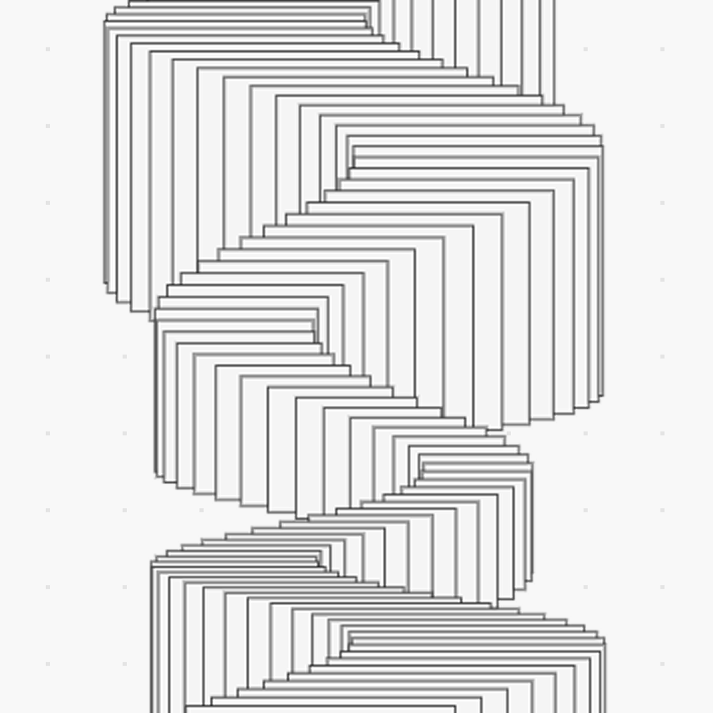
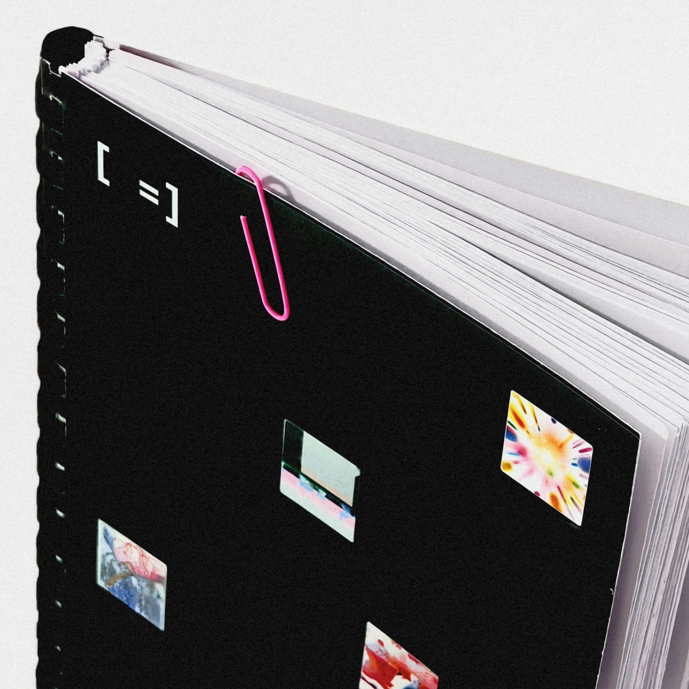

console
/* это креативный кодинг */





Обширная экосистема креативного кодинга, где вы освоите код через теорию, практику и вдохновение
Обширная экосистема креативного кодинга
30+
Работ
в Галерее
3
Языка
кодинга
100%
open‑source
модель
Чему и как я буду учиться?

2–4 часа на изучение
Базовые
знания
Разбираем, как код превращается в изображение: форма, цвет, координаты и первые генеративные паттерны на Vanilla JS.

10–12 часов на изучение
Принципы
креативного
кода
Добавляем движение и интерактив, работаем с событиями и анимацией. Осваиваем p5.js и делаем первые 3D-сцены в Three.js.

12–16 часов на изучение
Продвинутая
практика
Делаем генератив и сложные алгоритмы. Переходим от простых эффектов к системам и собираем собственный инструментарий.
Почему кодить у нас не скучно?

Научишься
через практику
Каждый туториал — эксперимент с плавным усложнением. Шаг за шагом ты начнёшь чувствовать, как помощью кода научиться воплощать собственные идеи в жизнь

Испытаешь
три библиотеки
Работа с Vanilla JS, p5.js и Three.js поможет понять, как по-разному можно работать с визуалом, интерактивом и генерацией

Сделаешь
портфолио
В процессе ты соберёшь портфолио не из учебных заготовок, а из работ, которые можно показывать, публиковать и развивать дальше

Засветишься
в галерее
Отобранные работы попадают на страницу Галереи — это часть экосистемы, где можно увидеть, что делают другие и показать себя

Следи за нашими
новостями
Перейти в телеграм